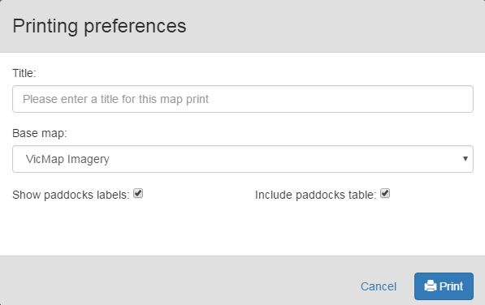
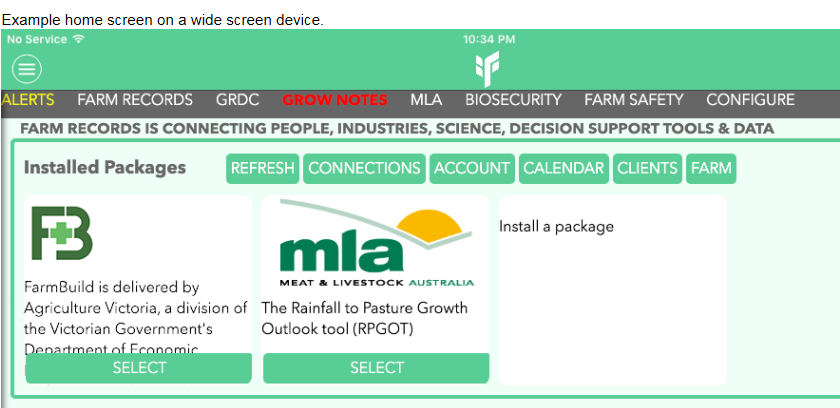

Issue 1 - Spring 2016
Communicating with you
FarmBuild has been live for approximately one year now, and in that time we have been hard at work delivering services and features. Hosting a webinar in July and a Hack Day in August this year started to spread the word about FarmBuild and what it can do.
We want to keep communicating with you; including those of you who have used FarmBuild, who use FarmBuild, or who want to use FarmBuild. New services and features are being developed, and new apps and tools are being created by partners as a result.
Google+ will also give you up-to-date information on FarmBuild. Follow the page with your own Google+ account, or request to join the private community ‘FarmBuild Developer’ by emailing Hayden Lewis. You can also subscribe to the FarmBuild YouTube Channel where some short videos have been uploaded to assist you.
This quarterly newsletter provides a brief update of new ideas, new features, and stories of FarmBuild applications. Please share with colleagues and friends. Alternatively, if you wish to be removed from the newsletter email list, please email Gemma.Heemskerk@ecodev.vic.gov.au.
We encourage this communication to be two-way; your suggestions and review of FarmBuild’s services and features is essential to its success. We welcome you to contact us at any time - Hayden.Lewis@ecodev.vic.gov.au.
What's new?
Benchmarking Whisker Charts

Image: Example of the benchmarking whisker charts now available as part of the Dairy Nutrient Calculator.
The FarmBuild Dairy Nutrient Calculator has had benchmarking whisker charts added! Benchmarking parameters estimated from 60 sets of farm data and have been hard coded into the version available on GitHub.
Map Print Service

Image: Screenshot of the Map Print Service printing preferences that will return a PDF.
The map print service allows you to print your output from the FarmBuild mapping service. The service will return a PDF file via the Application Programming Interface (API). For further details visit https://github.com/FarmBuild.
Register for FarmBuild Services
FarmBuild registration is a once off process to:
- capture FarmBuild user information;
- provide access to FarmBuild web services through authentication; and
- provide a communication link to the FarmBuild support services.
You must register to generate a 'CLIENT ID' and a ‘CLIENT SECRET'. These credentials are mandatory for the authentication of the Soil Area Calculation Service. Registration is important to ensure that all use is correctly reported to Google Analytics, thereby allowing the project team to monitor and report on usage levels. Go to farmbuild-user.agriculture.vic.gov.au/#/registration.
Winners are Grinners
In September, the FarmBuild team was presented with the Award for ‘Innovation and Commercialisation’ at the Victorian Spatial Excellence Awards. FarmBuild is now in the running for an award at the Asia-Pacific Spatial Excellence Awards in 2017.

Image: Project leader Andy McAllister and Technical Officer Hayden Lewis accepting the Award at the Victorian Spatial Excellence Awards.
Case Study - Farm Records
Farm Records provides a collaborative platform for a wide range of agricultural software, support services and decision support tools. Farm Records aims to make your data accessible to the many science and decision tools that have been created by Government and industry, of which FarmBuild is one. Developed by Internet Creative, Farm Records has adopted FarmBuild as a package on its platform. For further information visit FarmRecords.com.au.

Image: Screenshot from Farm Records, demonstrating the home screen display on the platform.
Available for Hire
If you have experience developing an app or tool using FarmBuild and would like to offer your services to other FarmBuild users, please email Gemma.Heemskerk@ecodev.vic.gov.au. In the next issue we can provide your contact details and begin to build a community of ‘FarmBuild Developers’.
We would also be interested in knowing how you have used FarmBuild to create useful products for your clients. This information is important to us when we report on the usefulness and impact of FarmBuild.
Register for FarmBuild
For more information on registering, please click here
TweetBack to FarmBuild